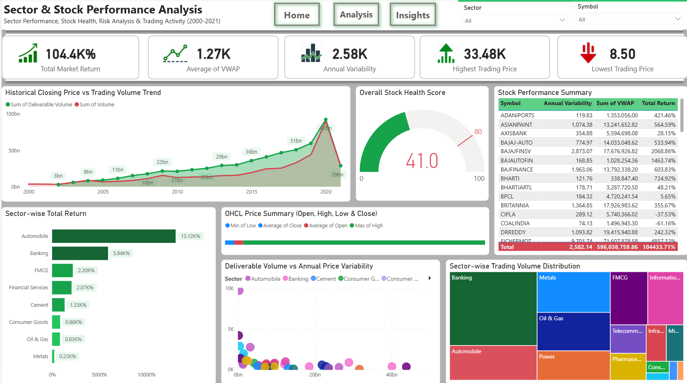
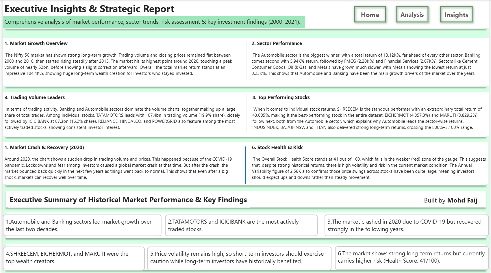

Turning 20+ years of NIFTY 50 trading history into a decision-grade view of sector growth, stock volatility, and market health — across 52 stocks and 8,036 trading days (2000–2021).



| Sector | Total Return | Growth Tier |
|---|---|---|
| Automobile | 13.12K% | Leader ⭐ |
| Banking | 5.94K% | Strong |
| FMCG | 2.20K% | Moderate |
| Financial Services | 2.07K% | Moderate |
| Cement | 1.33K% | Moderate |
| Consumer Goods | 0.86K% | Slow |
| Oil & Gas | 0.83K% | Slow |
| Metals | 0.23K% | Slowest |
| TOTAL MARKET | 104.4K% | — |
SHREECEM's return so far outpaces the rest of the list that it's plotted on a compressed scale — the next five stocks are genuinely strong performers in their own right.
Top 2 stocks alone (TATAMOTORS + SBIN) account for nearly 40% of total observed trading volume.
Reading the Score
At 41/100, the market sits just inside the caution zone — strong historical returns, but current volatility keeps the composite score below the "healthy" threshold.
Annual Variability of 2.58K confirms the price swings driving this score are real and ongoing, not a one-time event.
-- Total return per sector, ranked highest to lowest SELECT sector, COUNT(DISTINCT symbol) AS total_stocks, ROUND( SUM((close_price - open_price) / open_price) * 100.0, 2 ) AS total_return_pct FROM nifty50_prices GROUP BY sector ORDER BY total_return_pct DESC;
-- VWAP and annual variability per symbol SELECT symbol, ROUND( SUM(close_price * volume) / SUM(volume), 2 ) AS vwap, ROUND( (MAX(high_price) - MIN(low_price)) / AVG(close_price) * 100.0, 2 ) AS annual_variability FROM nifty50_prices GROUP BY symbol ORDER BY annual_variability DESC;
-- Share of total market volume per symbol SELECT symbol, SUM(volume) AS total_volume, ROUND( SUM(volume) * 100.0 / SUM(SUM(volume)) OVER (), 2 ) AS volume_share_pct FROM nifty50_prices GROUP BY symbol ORDER BY total_volume DESC LIMIT 10;
-- Total Market Return Total Market Return = DIVIDE( SUM('NiftyPrices'[close_price]) - SUM('NiftyPrices'[open_price]), SUM('NiftyPrices'[open_price]), 0 ) * 100 -- Average VWAP Avg VWAP = DIVIDE( SUMX('NiftyPrices', 'NiftyPrices'[close_price] * 'NiftyPrices'[volume]), SUM('NiftyPrices'[volume]), 0 ) -- Annual Variability Annual Variability = DIVIDE( MAX('NiftyPrices'[high_price]) - MIN('NiftyPrices'[low_price]), AVERAGE('NiftyPrices'[close_price]), 0 ) * 100
-- Overall Stock Health Score (0-100 composite) Stock Health Score = VAR _volatilityScore = 100 - MIN([Annual Variability] / 30, 100) VAR _liquidityScore = MIN(DIVIDE(SUM('NiftyPrices'[volume]), 500000000, 0) * 100, 100) VAR _returnScore = MIN([Total Market Return] / 500, 100) RETURN ROUND( (_volatilityScore * 0.4) + (_liquidityScore * 0.3) + (_returnScore * 0.3), 0 )
-- Year-over-Year trading volume growth Volume YoY % = VAR _currentYear = SUM('NiftyPrices'[volume]) VAR _prevYear = CALCULATE( SUM('NiftyPrices'[volume]), DATEADD('DateTable'[Date], -1, YEAR) ) RETURN DIVIDE(_currentYear - _prevYear, _prevYear, 0)
import pandas as pd import matplotlib.pyplot as plt import seaborn as sns # Load dataset df = pd.read_csv('nifty50_all_stocks.csv', parse_dates=['date']) # Basic overview print(df.shape) # (rows, columns) print(df['symbol'].nunique()) # 52 unique stocks # Sector-wise total return df['return_pct'] = (df['close'] - df['open']) / df['open'] * 100 sector_return = ( df.groupby('sector')['return_pct'] .sum() .sort_values(ascending=False) ) print(sector_return) # Historical volume trend, 2000-2021 fig, ax = plt.subplots(figsize=(10, 5)) df.groupby(df['date'].dt.year)['volume'].sum().plot( ax=ax, color='#4f46e5', linewidth=2 ) ax.set_title('NIFTY 50 Trading Volume, 2000-2021') plt.tight_layout() plt.show()
# Annual variability per stock volatility = ( df.groupby('symbol') .agg( high_max=('high', 'max'), low_min=('low', 'min'), close_avg=('close', 'mean') ) ) volatility['annual_variability'] = ( (volatility['high_max'] - volatility['low_min']) / volatility['close_avg'] * 100 ) # Normalize into a 0-100 composite health score def health_score(row): vol_score = max(0, 100 - row['annual_variability'] / 30) liq_score = min(100, row['volume_share'] * 10) return round(vol_score * 0.6 + liq_score * 0.4, 1) volatility['health_score'] = volatility.apply(health_score, axis=1)
# Isolate the 2020 crash and recovery window covid_window = df[ (df['date'] >= '2020-01-01') & (df['date'] <= '2021-12-31') ] peak_volume = covid_window['volume'].max() trough_date = covid_window.loc[covid_window['close'].idxmin(), 'date'] drawdown_pct = ( (covid_window['close'].max() - covid_window['close'].min()) / covid_window['close'].max() * 100 ) print(f"Peak volume: {peak_volume:,.0f}") print(f"Trough date: {trough_date.date()}") print(f"Max drawdown: {drawdown_pct:.2f}%")